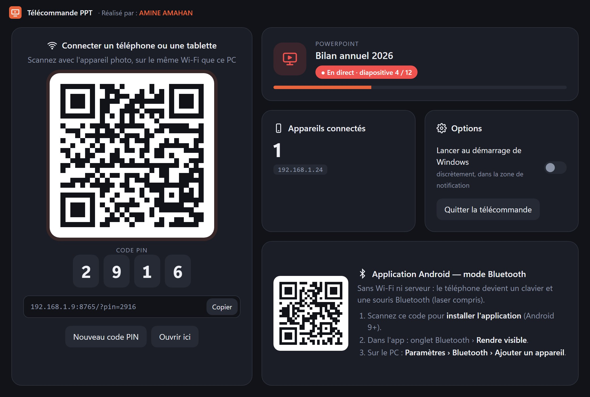
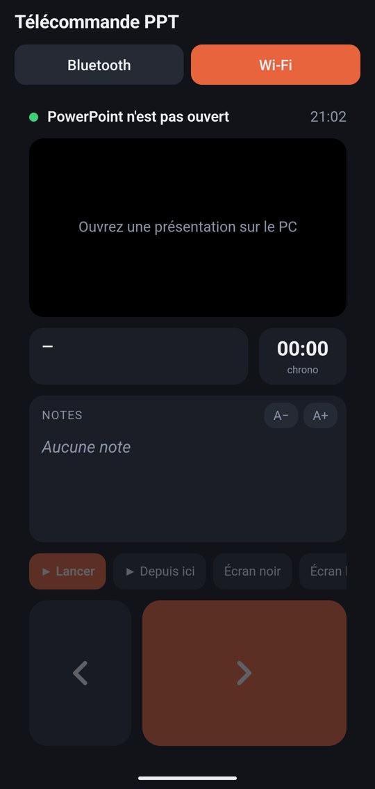
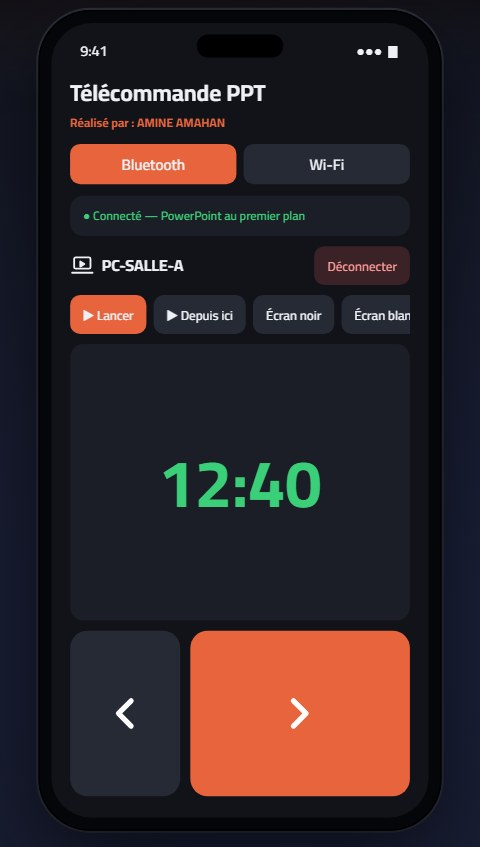

Changez de diapositive, lisez vos notes, pointez avec le laser et suivez votre temps, depuis votre téléphone ou votre tablette, en Wi-Fi ou en Bluetooth.
Fonctionne avec Microsoft PowerPoint sur Windows · aucun compte, aucune publicité


Une télécommande complète, pensée pour la scène : grosses touches, retour haptique, écran toujours allumé.
Gros boutons, balayage sur l'aperçu ou touches de volume du téléphone.
Touchez l'aperçu, ou visez l'écran avec le gyroscope : le laser de PowerPoint suit votre geste.
Vos notes s'affichent sur le téléphone, avec une taille de texte réglable.
La diapositive projetée, son numéro et le titre de la suivante, en temps réel.
Le chrono démarre avec le diaporama, pour garder un œil sur votre temps.
Mettez la projection en pause d'une touche pour capter l'attention.
Une grille de miniatures pour sauter directement à n'importe quelle diapo.
Un code PIN protège l'accès. Plusieurs appareils peuvent se connecter à la fois.
Choisissez selon la salle : le Wi-Fi pour tout voir, le Bluetooth quand il n'y a pas de réseau.

Trente secondes pour découvrir la télécommande : navigation, mode Bluetooth, mode Wi-Fi avec les notes, et toutes les fonctionnalités.
Elle affiche un QR code et un code PIN.
Sur le même Wi-Fi, ou associez-le en Bluetooth avec l'app Android.
Ouvrez votre présentation et pilotez-la où que vous soyez dans la salle.
Gratuit. Installez l'application sur le PC qui projette, et l'app Android si vous voulez le mode Bluetooth.
Windows : l'installateur n'est pas encore signé. Si Windows affiche « Windows a protégé votre ordinateur », cliquez sur Informations complémentaires › Exécuter quand même.
Android : autorisez l'installation depuis des « sources inconnues » quand le téléphone le demande.